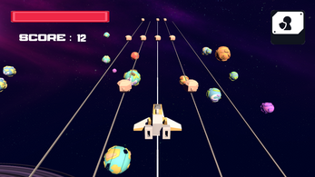

Projets en vedette
PodRacer
PodRacer est un jeu de course et de parcours futuriste développé sous Unreal Engine 5, où le joueur pilote un vaisseau antigravité à travers des circuits rapides, dynamiques et bourrés d'obstacles destructibles. Inspiré du style nerveux de Trackmania, chaque course est une invitation à la vitesse, à la maîtrise et à l'expérimentation.
 Voir le projet
Voir le projet
AstroShift
Un jeu où vous contrôlez un vaisseau spatial pour éviter des météores et explorer l'univers.
 Voir le projet